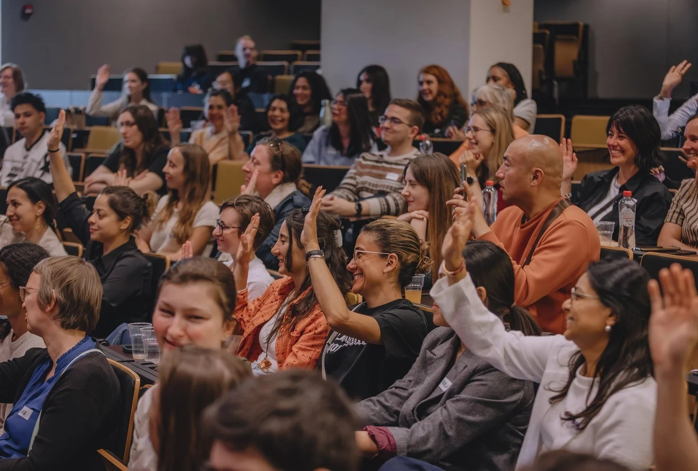

Lizi Zivzivadze
Electromechanical Engineer
I build tech, start to finish, every week, solutions to the real problems that matter.
Projects
Mini Solar Power Station
URLSolar voltage, temperature, and humidity on an OLED.
A desktop solar station that shows live voltage, temperature, and humidity on a small screen, so anyone can actually see clean energy working in real time. I built it to turn an abstract idea into something you can watch and understand — and to teach myself how sensors and microcontrollers work together.
The station runs on an ESP32 microcontroller reading temperature and humidity from a DHT11 sensor, while a voltage divider measures the solar panel's output. Everything displays live on an OLED screen powered by the panel itself. I used AI to optimize and debug the firmware.
Building this taught me to turn raw analog sensor readings into accurate values with a voltage divider, drive an OLED over I2C, and write firmware that stays reliable while running live. It grew my skills in embedded systems, real-time data handling, and debugging hardware alongside code.
Skillsets
1/12
Skills
Prompt Engineering
84%
Agentic Systems
80%
Multimodal LLMs
78%
RAG
76%
Voice Pipelines
82%
Vision-Language
74%
Quantization
46%
Edge Inference
52%
Fine-Tuning
50%
Embeddings
60%
Tool Calling
78%
Eval Harnesses
44%
ESP32
85%
Bare-Metal C
62%
FreeRTOS
48%
Interrupts
72%
I2S Protocol
80%
SPI / I2C
78%
Memory Mgmt
66%
Device Drivers
64%
Low-Power Design
58%
CAN Bus
42%
Embedded Linux
44%
Bootloaders
40%
n8n Workflows
85%
Event Pipelines
80%
Webhook Routing
78%
Multi-API Chaining
76%
Headless Scraping
72%
Cron Scheduling
74%
Retry Logic
68%
Self-Hosting
66%
Queue Systems
52%
Observability
50%
Rate Limiting
60%
Idempotency
46%
Closed-Loop Control
78%
Stepper Actuation
80%
Sensor Fusion
54%
Kalman Filters
44%
SLAM
40%
ROS2
42%
Path Planning
48%
Odometry
50%
Inverse Kinematics
46%
Obstacle Avoidance
58%
State Estimation
52%
Teleoperation
64%
PID Tuning
74%
Feedback Loops
80%
Deadzone Comp
82%
Slew Limiting
78%
Setpoint Tracking
76%
Signal Smoothing
80%
Step Response
60%
Stability Margins
50%
State Machines
72%
Damping Control
56%
Motion Profiling
62%
Loop Latency
68%
MediaPipe
82%
Object Detection
74%
Landmark Tracking
80%
OpenCV
76%
Frame Streaming
78%
Image Classification
72%
Optical Flow
48%
Camera Calibration
44%
Segmentation
42%
Depth Estimation
40%
Gesture Recognition
78%
CNN Inference
54%
Circuit Prototyping
82%
Perfboard Soldering
80%
Actuator Integration
76%
Power Wiring
78%
Sensor Interfacing
80%
3D Printing
58%
CNC Machining
52%
Enclosure Design
48%
Antenna Fabrication
60%
PCB Design
44%
Field Repair
74%
Systems Bring-Up
70%
I2S Audio Capture
80%
DMA Buffering
66%
Sampling Theory
58%
Digital Filtering
54%
FFT Analysis
46%
NMEA Parsing
78%
UART Decoding
80%
Noise Rejection
60%
Real-Time DSP
50%
Audio Classification
64%
Waveform Analysis
56%
Protocol Reversing
62%
Solid Edge
66%
Siemens NX
58%
MultiSim
64%
MATLAB
60%
Simulink
54%
TIA Portal
62%
SEE Electrical
60%
Physics Engines
78%
FEA Basics
44%
Digital Twins
42%
Circuit Simulation
68%
Phasor Analysis
74%
Radical Ownership
85%
Self-Direction
85%
Rapid Learning
84%
Bias to Ship
82%
Resilience
80%
First Principles
78%
Decisiveness
74%
Technical Comms
70%
Mentoring
58%
Stakeholder Mgmt
54%
Vision-Setting
72%
Accountability
82%
Critical Path
78%
PERT Estimation
74%
Scope Control
76%
Risk Mapping
66%
Gantt Planning
72%
Milestone Tracking
78%
Resource Balancing
60%
Dependency Mgmt
64%
Agile Sprints
56%
Roadmapping
70%
Delivery Cadence
80%
Retrospectives
58%
Systems Thinking
82%
Tech Foresight
78%
First Principles
80%
Market Positioning
62%
Competitive Analysis
66%
Opportunity Sizing
58%
Cost Modeling
60%
Innovation Scouting
76%
Trade-Off Analysis
78%
Domain Research
80%
Adaptability
84%
Execution Focus
84%
Events

Decoding Tech 2026
URLClusity x KdG tech fair linking students with industry.
A tech fair and keynote evening by Clusity x KdG bringing professionals and students together. I networked and connected with attendees, controlled a robot dog and explored the software behind it, programmed a robotic arm, and competed in software games before keynotes on continuous learning, resilience, and AI.
Decoding Tech 2026
URLClusity x KdG tech fair linking students with industry.
A tech fair and keynote evening by Clusity x KdG bringing professionals and students together. I networked and connected with attendees, controlled a robot dog and explored the software behind it, programmed a robotic arm, and competed in software games before keynotes on continuous learning, resilience, and AI.

What do I bring to the table?
What You Get
You get real, working builds, not pitches. I turn ideas into hardware and software that function end to end, and fix what breaks along the way. Point me at a problem and I'll bring back a solution, not a status update.
3/3Who I Am
I'm a Georgian national studying Electromechanical Engineering Technology at KU Leuven Group T in Leuven, Belgium. I'm drawn to work where mechanics, electronics, and software meet.
2/3How I Build
Every project starts the same way: I research the idea until I understand it, sketch out a plan for how the pieces fit together, then build and test in small steps before combining everything into one working system.
1/3